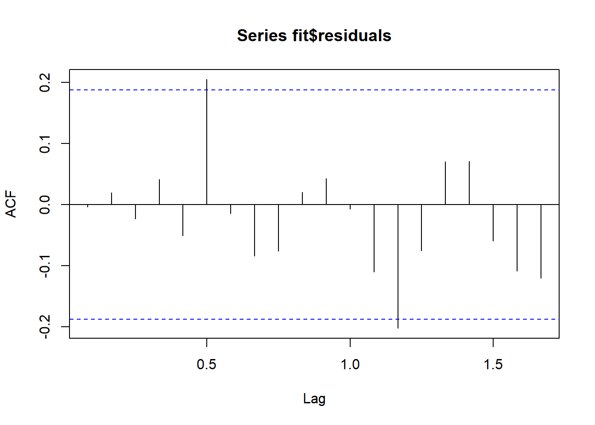

11 Implementación modelo ARIMA
#install.packages("forecast")
#install.packages("tseries")
#install.packages("ggplot2")
#install.packages("zoo")
library(forecast)
library(tseries)
library(ggplot2)
library(zoo)# Prueba de Dickey-Fuller aumentada
adf_test <- adf.test(datosVig, alternative = "stationary")
# Resultados de la prueba ADF
adf_test$p.value## [1] 0.3538667El p-valor de la prueba ADF es 0.3538667, lo que indica que la serie no es estacionaria, ya que el p-valor es mayor que 0.05.
Después de aplicar la diferenciación, se realiza otra prueba ADF:
# Si la serie no es estacionaria, aplicar diferenciación
if (adf_test$p.value > 0.05) {
df_diff <- diff(datosVig)
adf_test_diff <- adf.test(df_diff, alternative = "stationary")
# Resultados de la prueba ADF después de la diferenciación
adf_test_diff$p.value
}## [1] 0.2851663El p-valor sigue siendo mayor que 0.05, quiere decir que la serie aún no es estacionaria. Esto podría indicar que la serie necesita más diferenciación o alguna otra transformación.
La transformación logarítmica se aplica para estabilizar la varianza y se realizó otra diferenciación sobre la serie logarítmica.
# Aplicar transformación logarítmica para estabilizar la varianza
df_log <- log(datosVig)
df_log_diff <- diff(df_log)
# Visualización de la serie transformada
plot(df_log, main = "Serie Logarítmica")## Series: df_log_diff
## ARIMA(3,0,0)(2,0,0)[12] with non-zero mean
##
## Coefficients:
## ar1 ar2 ar3 sar1 sar2 mean
## 0.4021 0.1546 0.1808 0.2938 0.2201 0.0066
## s.e. 0.0940 0.1055 0.0989 0.0944 0.1020 0.0032
##
## sigma^2 = 2.748e-05: log likelihood = 418.91
## AIC=-823.82 AICc=-822.71 BIC=-804.98
##
## Training set error measures:
## ME RMSE MAE MPE MAPE MASE
## Training set -0.0002133838 0.0050961 0.00389005 -87.14335 172.8213 0.5816587
## ACF1
## Training set -0.003267334El modelo ajustado es un ARIMA(3,0,0)(2,0,0)[12] con media no nula.Los valores del AIC y BIC indican un buen ajuste del modelo.
##
## Ljung-Box test
##
## data: Residuals from ARIMA(3,0,0)(2,0,0)[12] with non-zero mean
## Q* = 24.683, df = 17, p-value = 0.102
##
## Model df: 5. Total lags used: 22
El p-valor del test de Ljung-Box es 0.102, lo que indica que no hay autocorrelación significativa en los residuos del modelo (p-valor > 0.05), por lo que los residuos son ruido blanco. Los gráficos ACF y PACF de los residuos del modelo ayudan a confirmar que no hay autocorrelación significativa en los residuos.